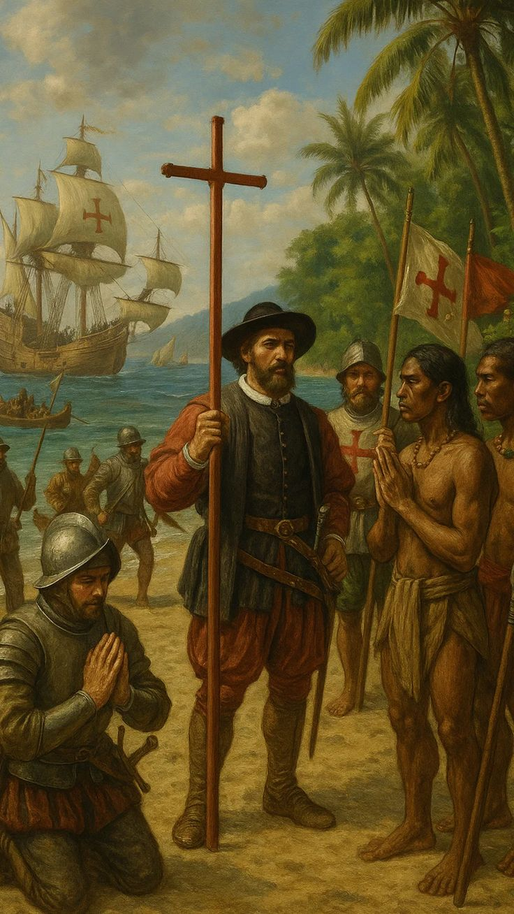
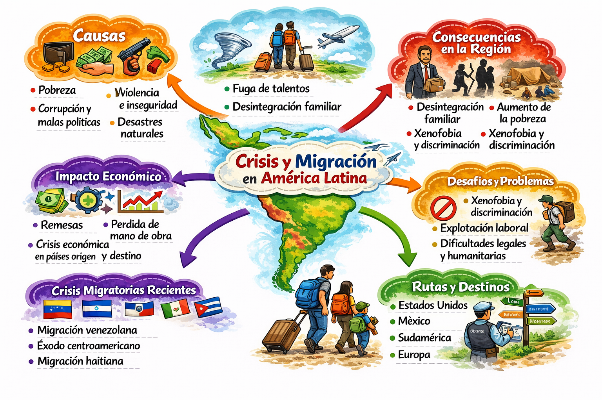
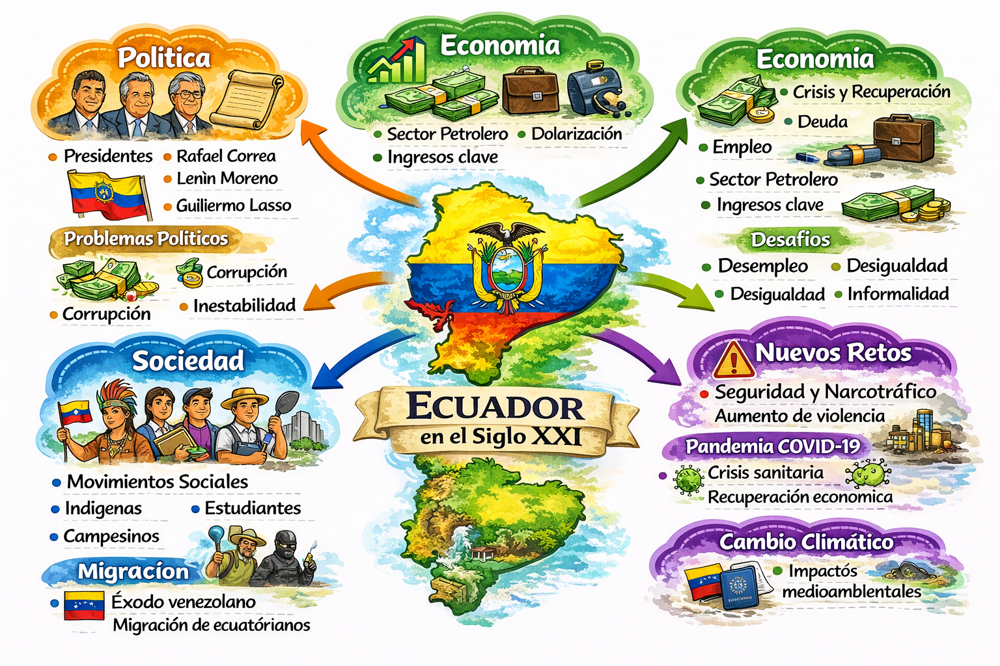
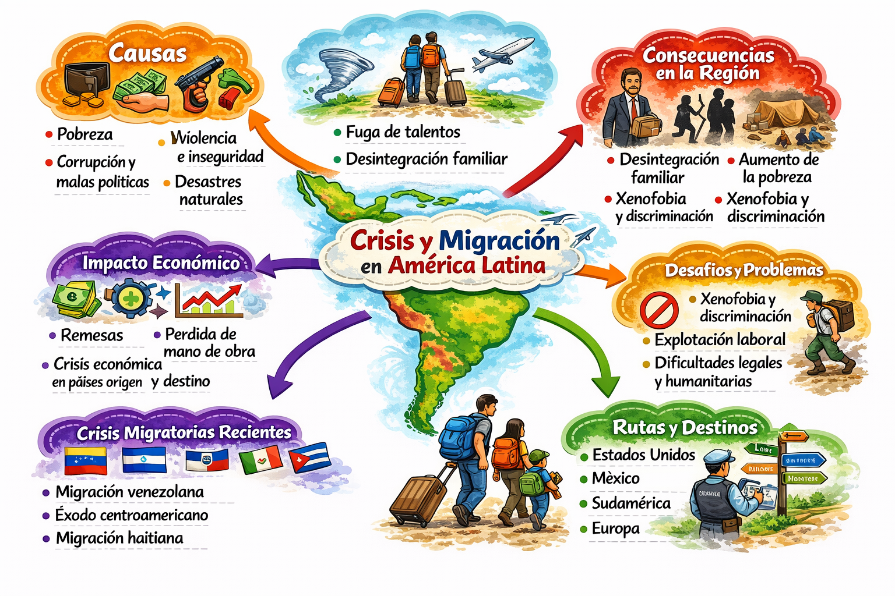
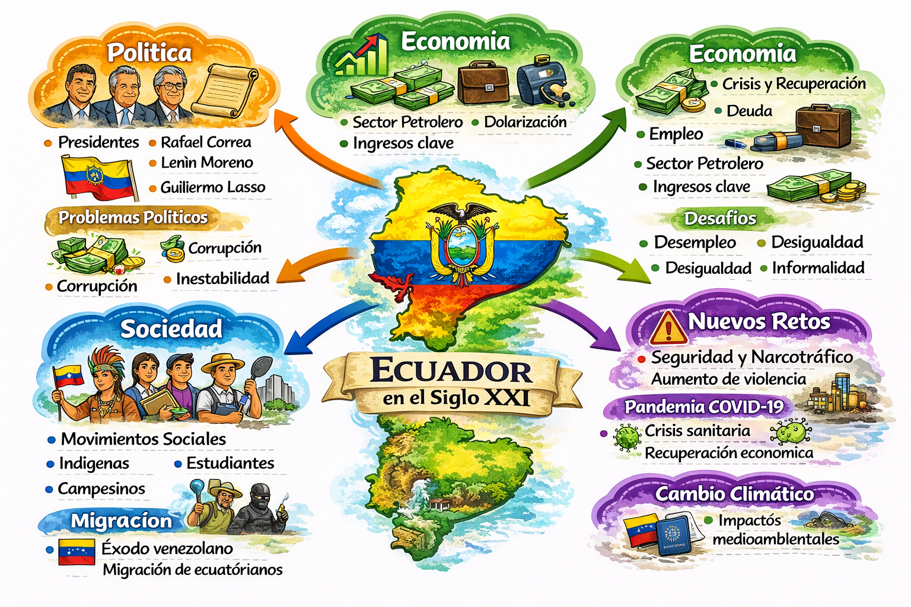

Tema 1
Los movimientos sociales y las revoluciones en Latinoamérica: de la resistencia indígena a la lucha por la igualdad
Los movimientos sociales y las revoluciones en Latinoamérica surgieron como respuesta a la desigualdad, la explotación y la falta de derechos políticos y sociales. A lo largo de la historia, campesinos, obreros, indígenas y estudiantes se organizaron para exigir justicia, libertad y mejores condiciones de vida frente a sistemas opresivos.
Estas luchas provocaron importantes transformaciones políticas, económicas y sociales en la región, influyendo en la independencia, la reforma agraria y la ampliación de derechos ciudadanos. Aunque muchos procesos fueron conflictivos, dejaron como legado la participación popular y la búsqueda constante de sociedades más justas e inclusivas.
Los movimientos sociales y las revoluciones en Latinoamérica representan procesos históricos complejos que surgieron como consecuencia de profundas desigualdades económicas, sociales y políticas heredadas desde la época colonial y reforzadas durante la formación de los Estados nacionales. Estos movimientos fueron impulsados por diversos sectores de la población, como campesinos, trabajadores, pueblos indígenas, mujeres y estudiantes, quienes enfrentaron la concentración de la riqueza, la exclusión política y la falta de acceso a derechos básicos. A través de protestas, levantamientos y organizaciones colectivas, estos grupos buscaron transformar estructuras de poder injustas y construir sociedades más equitativas.
🏛️Orígenes, luchas y transformaciones sociales en Latinoamérica
Estos procesos sociales se han manifestado a través de diversas formas de organización y lucha, entre las que destacan:
- Lucha contra la desigualdad social y económica
- Participación de campesinos, indígenas y trabajadores
- Organización colectiva y protesta social
- Búsqueda de justicia, derechos y cambios estructurales
Tema 2
Crisis, migración y desarrollo en América Latina
La crisis, la migración y el desarrollo en América Latina evidencian cómo la falta de oportunidades impulsa a las personas a desplazarse en busca de bienestar, transformando tanto a los países de origen como a los de destino.
La crisis, la migración y el desarrollo en América Latina conforman un fenómeno interrelacionado que refleja las profundas desigualdades estructurales de la región. Factores como la pobreza, el desempleo, la inestabilidad política, la violencia y los efectos del cambio climático han provocado que millones de personas migren dentro y fuera de sus países en busca de mejores condiciones de vida. Este desplazamiento humano tiene un impacto significativo en el desarrollo, ya que, por un lado, las remesas contribuyen al sostenimiento económico de muchas familias y comunidades, pero, por otro, la migración masiva genera desafíos como la pérdida de fuerza laboral, la presión sobre los servicios públicos y la necesidad de garantizar los derechos humanos de los migrantes. Frente a esta realidad, los Estados latinoamericanos enfrentan el reto de implementar políticas que promuevan un desarrollo sostenible, reduzcan las desigualdades y creen oportunidades que disminuyan la migración forzada.
Características de la migración en América Latina
-
🚶 Movilidad
Se refiere al desplazamiento de personas dentro de un mismo país o hacia otros países en busca de mejores condiciones de vida.
-
✋ Desplazamiento
Es el movimiento de personas desde su lugar de origen hacia otro territorio, ya sea dentro del mismo país o hacia el extranjero.
-
🧠 Migración
Proceso en el que las personas se trasladan temporal o permanentemente, dentro del país o al extranjero, por motivos económicos, sociales, políticos o ambientales.
Tema 3
Ecuador en el siglo XXI: un país en transformación
Durante el siglo XXI, Ecuador ha experimentado importantes transformaciones en su estructura política, económica y social, influenciadas por procesos de modernización, participación ciudadana y búsqueda de mayor inclusión social. Estos cambios han estado acompañados de desafíos como la desigualdad, la migración, la sostenibilidad ambiental y la adaptación a un mundo globalizado, lo que ha impulsado al país a redefinir su modelo de desarrollo y su identidad nacional.
En el siglo XXI, Ecuador ha atravesado un proceso continuo de transformación marcado por cambios políticos, sociales y económicos que han influido directamente en la vida de la población. El país ha buscado fortalecer la participación ciudadana, ampliar derechos y modernizar sus instituciones, al mismo tiempo que enfrenta desafíos persistentes como la desigualdad social, la migración, la inseguridad y la necesidad de un desarrollo sostenible. Estos procesos reflejan la búsqueda de un equilibrio entre crecimiento económico, justicia social y preservación del medio ambiente, en un contexto nacional e internacional cada vez más complejo.
Cronología del Ecuador en el siglo XXI
En el año 2000, Ecuador inició el siglo XXI enfrentando una profunda crisis económica que llevó a la dolarización, una medida clave para estabilizar la economía y controlar la inflación. Este hecho marcó un punto de inflexión en la historia del país, influyendo en el sistema financiero, el comercio y la vida cotidiana de la población, así como en los procesos de migración hacia otros países.
Entre 2007 y 2017, el país vivió un periodo de importantes transformaciones políticas y sociales, destacándose la aprobación de la Constitución de 2008, que amplió derechos y fortaleció la participación ciudadana. Durante estos años se impulsaron inversiones en educación, salud e infraestructura, buscando reducir la pobreza y promover un mayor rol del Estado en el desarrollo nacional.
Desde 2020 hasta la actualidad, Ecuador ha enfrentado nuevos y complejos desafíos, como el impacto de la pandemia del COVID-19, el aumento de la inseguridad, la migración y la necesidad de un desarrollo sostenible. Estos procesos reflejan que el país continúa en constante transformación, buscando estabilidad, crecimiento económico y mejores condiciones de vida para su población.
📜 Etapas del Ecuador en el siglo XXI
Selecciona una etapa
Haz clic en una etapa para ver la información aquí.
Mapa Mental del Tema
 


